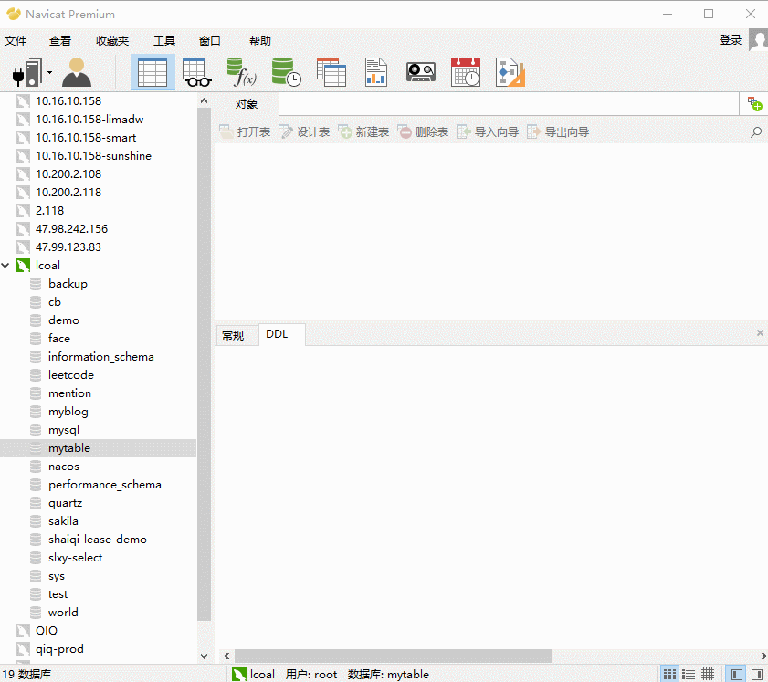
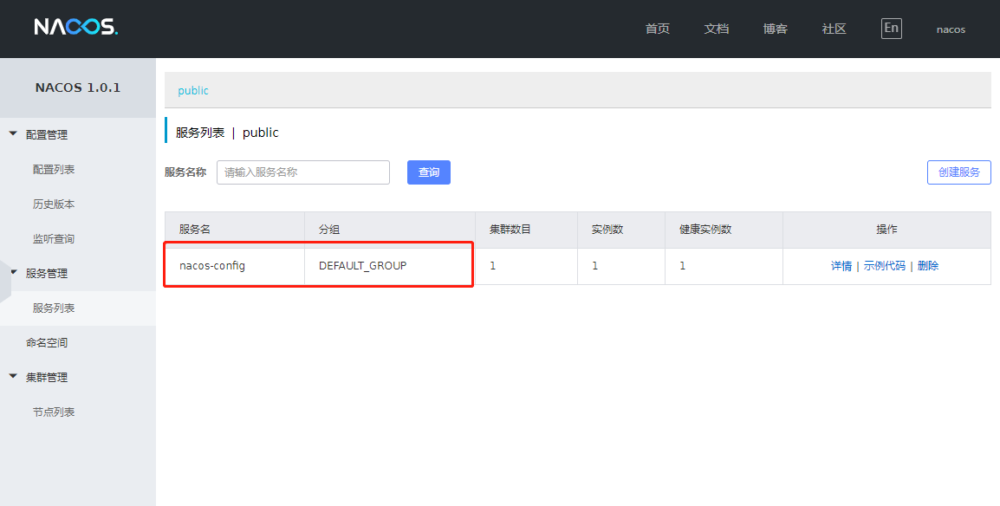
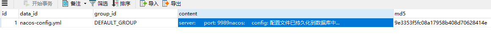

Spring Cloud Alibaba基础教程：Nacos的数据持久化
前景回顾：
前面的七篇文章，从Nacos介绍，到Nacos做注册中心、做配置中心，一直都没有提及持久化的问题。
我们服务的信息、配置的信息都放在哪的？
当我们使用默认配置启动Nacos时，所有配置文件都被Nacos保存在了内置的数据库中。
在0.7版本之前，在单机模式时nacos使用嵌入式数据库实现数据的存储，不方便观察数据存储的基本情况。0.7版本增加了支持mysql数据源能力
如果使用内嵌数据库，注定会有存储上限，本文带大家一起将Nacos中的数据实现持久化
本文的项目Demo继续沿用之前文章中的聚合工程Nacos,若小伙伴还没有之前的环境，可至源码地址中下载
本文的演示环境为：windows平台
本文使用Nacos（四）项目代码作为演示
项目内容不做修改
目前Nacos仅支持Mysql数据库，且版本要求：5.6.5+
Nacos的数据库脚本文件在我们下载Nacos-server时的压缩包中就有
进入nacos-server-1.0.1\nacos\conf目录，初始化文件：nacos-mysql.sql
此处我创建一个名为 mynacos 的数据库，然后执行初始化脚本，成功后会生成 11 张表

这里是需要修改Nacos-server的配置文件
Nacos-server其实就是一个Java工程或者说是一个Springboot项目，他的配置文件在nacos-server-1.0.1\nacos\conf目录下，名为 application.properties，在文件底部添加数据源配置：
spring.datasource.platform=mysql
db.num=1
db.url.0=jdbc:mysql://127.0.0.1:3306/mynacos?characterEncoding=utf8&connectTimeout=1000&socketTimeout=3000&autoReconnect=true
db.user=root
db.password=123456
先启动Nacos-server，启动方式不变，直接双击执行nacos-server-1.0.1\nacos\bin下的startup.cmd文件
启动成功后进入Nacos控制台，此时的Nacos控制台中焕然一新，之前的数据都不见了
因为加入了新的数据源，Nacos从mysql中读取所有的配置文件，而我们刚刚初始化的数据库是干干净净的，自然不会有什么数据和信息显示。
在公共空间(public)中新建一个配置文件DataID: nacos-config.yml, 配置内容如下：
server:
port: 9989
nacos:
config: 配置文件已持久化到数据库中...再启动Nacos（四）中的demo项目。服务启动成功后，观察Nacos控制台如下

观察数据库mynacos中的数据库表 config_info , 如下

请求一下接口 http://127.0.0.1:9989/getValue 返回结果：
配置文件已持久化到数据库中...
Nacos通过集中式存储来保证数据的持久化，同时也为Nacos集群部署奠定了基础
试想一下，如果我们以之前的方式启动Nacos，如果想组建Nacos集群，那各个节点中的数据唯一性就是最大的问题
Nacos采用了单一数据源，直接解决了分布式和集群部署中的一致性问题。